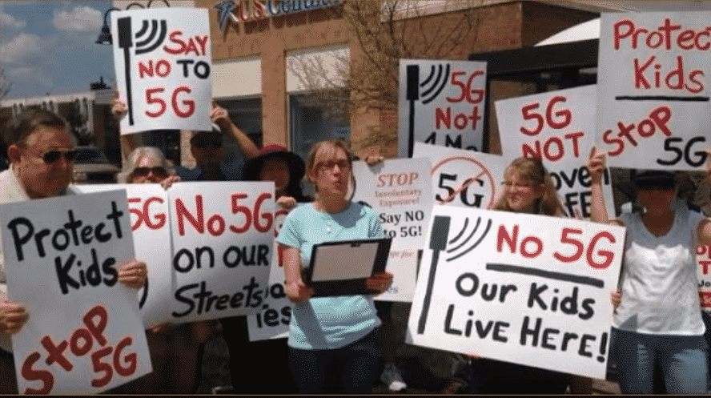

La radiación electromagnética utilizada por todas las tecnologías de telefonía celular ha llevado a que algunos se preocupen por sus riesgos a la salud, como desarrollar ciertos tipos de cáncer. En 2014 la Organización Mundial de la Salud (OMS) indicó que "no se han establecido efectos adversos a la salud causados por el uso de teléfonos celulares". Sin embargo, la OMS junto con la Agencia Internacional para la Investigación de Cáncer (IARC) clasificó toda la radiación de las frecuencias de radio (de la cual las señales de móviles forman parte) como "posibles carcinógenos". Fue puesta en esta categoría porque "hay evidencia que no llega a ser concluyente de que la exposición puede causar cáncer en humanos". Comer vegetales en escabeche y utilizar talco están clasificados en el mismo nivel de riesgo. Las bebidas alcohólicas y la carne procesada están ubicados en un riesgo más alto.
